A full example of a spatial population model
Martin Petr
2021-04-06
example.RmdIntroduction
This vignette presents a much more complete example of a spatio-temporal population model with admixture. Unlike the main tutorial, it doesn’t go into too much detail to explain the basic concepts. If you’re struggling with some of the features presented here, please take a look at the tutorial first.
Note that this example script is supposed to demonstrate all the features of spammr but its aim is not to be particularly realistic. Some migration aspects are overly dramatic, but that’s just for demonstration purposes.
The raw script behind this vignette can be found here. You might want to load this in RStudio to run the commands manually, instead of copy-pasting individual pieces of the code from this website to the R console yourself. The Markdown comments are still present in that script.
Requirements
This R package requires SLiM version 3.6 and will not work with an older release. You can find the latest version here.
️⚠️Also, please make sure to always install the latest version from Github before trying out the package by running:
devtools::install_github("bodkan/spammr")I’m adding bugfixes and new features every couple of hours and it’s always worth updating to the latest version.
After you have installed to the latest version, you can load the package by running:
library(spammr)Define the world context
world <- map(
xrange = c(-15, 60), # min-max longitude
yrange = c(20, 65), # min-max latitude
crs = "EPSG:3035" # real projected CRS used internally
)
#> OGR data source with driver: ESRI Shapefile
#> Source: "/private/var/folders/hr/_t1b0f5n7c76yrfsg8yk9l100000gn/T/Rtmp93sYyT", layer: "ne_110m_land"
#> with 127 features
#> It has 3 fields
plot(world)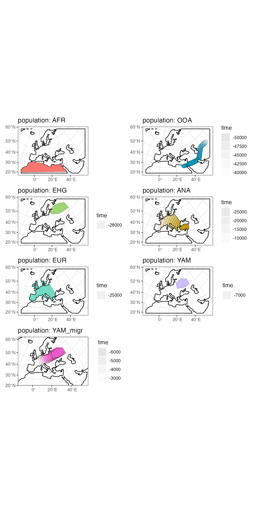
Define some useful geographic regions
As we will se below and in the tutorial, there are several options to define population spatial ranges using geometric objects (circles, arbitrary polygons, etc.). Defining a population range using a geographic region object such as those we create here is another useful option.
Part of the African continent in our zoom of the world
africa <- region(
"Africa", world,
coords = list(
c(-18, 20), c(40, 20), c(30, 33),
c(20, 32), c(10, 35), c(-8, 35)
)
)
plot(africa)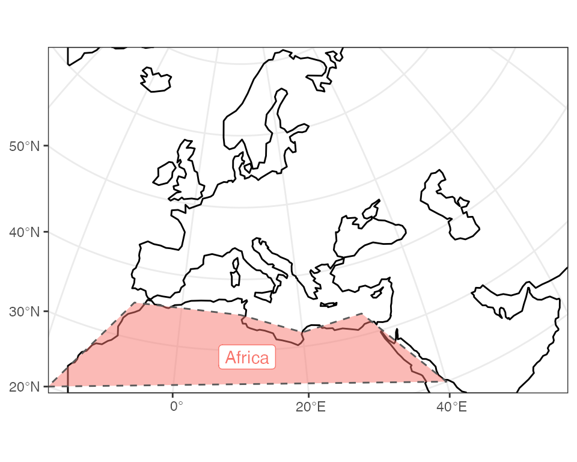
Europe and Anatolian peninsula:
europe <- region(
"Western Europe", world,
coords = list(c(-8, 35), c(-5, 36), c(10, 38), c(20, 35), c(25, 35),
c(28, 45), c(20, 58), c(-5, 60), c(-15, 50))
)
plot(europe)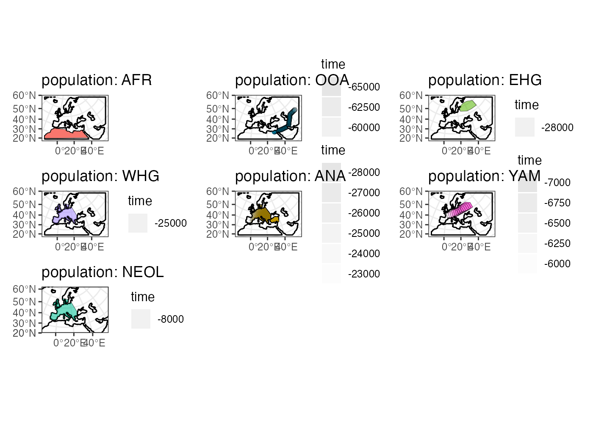
anatolia <- region(
"Anatolia", world,
coords = list(c(28, 35), c(40, 35), c(42, 40),
c(30, 43), c(27, 40), c(25, 38))
)
plot(anatolia)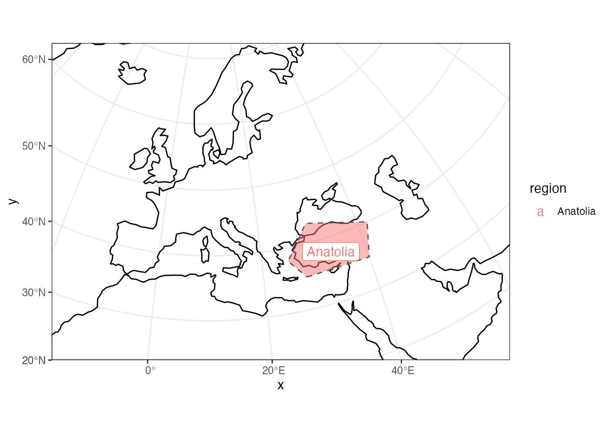
Europe and Anatolia
We use this region to restrict Anatolian “farmer” migration to Europe further down in this vignette:
europe_anatolia <-region(
"Western Europe & Anatolia", world,
coords = list(c(-10, 35), c(-5, 35), c(10, 38), c(20, 35),
c(38, 35), c(40, 40), c(30, 45), c(20, 58),
c(-5, 60), c(-15, 50))
)
plot(europe_anatolia)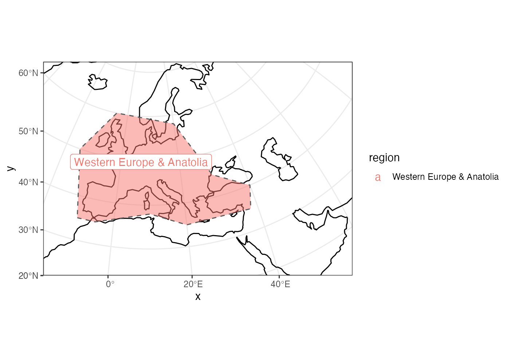
Define population dynamics
Again, we can’t go into too much detail here but what we demonstrate is:
definition of population ranges -
population()migration of population through space -
move()expansion from a current location outwards -
expand()changing a spatial range at a certain time point -
update()
Look for the use of these functions for defining different spatio- temporal population boundaries below.
Note that the \(N_e\) values are very small - this is on purpose, to make the simulations run faster for demonstration purposes.
African population of modern human ancestors:
afr <- population(
"AFR", parent = "ancestor", Ne = 100,
world = world, region = africa
)Below we can see how this object is represented when printed out. Under the hood it is much more complicated, but this serves as a easy-to-read summary for spotting obvious mistakes.
afr
#> spammr 'population' object
#> --------------------------
#> name: AFR
#> split from: [this is an ancestral population]
#> removed at: [will not be removed]
#> snapshots:
#> # time Ne map
#> 1 Inf 100 new
#>
#> projected CRS: ETRS89-extended / LAEA EuropeObviously, we can also plot the population range in the context of the defined world:
plot(afr)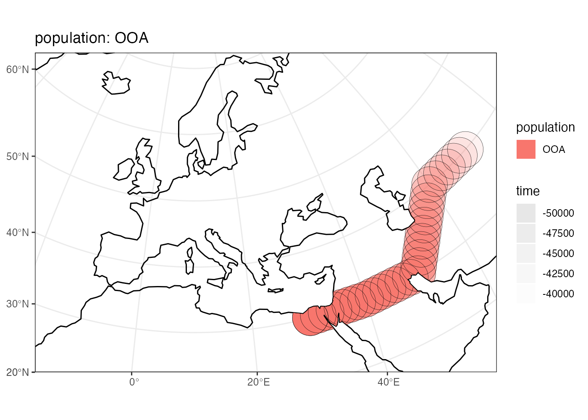
Out-of-Africa migrants
This population starts in north east Africa and moves in a deliberately funny trajectory somewhere to central Eurasia (perhaps the Ust-Ishim population?). Note that the trajectory is specified using “checkpoints” - points along the way between which the population moves.
ooa <- population(
"OOA", parent = afr, time = 51000, Ne = 200,
center = c(30, 30), radius = 300, remove = 27000
) %>% move(
trajectory = list(c(40, 30), c(50, 30), c(60, 40), c(70, 40)),
start = 50000,
end = 40000,
snapshots = 30
)
ooa
#> spammr 'population' object
#> --------------------------
#> name: OOA
#> split from: AFR
#> split time: 51000
#> removed at: 27000
#> snapshots:
#> # time Ne map
#> 1 51000.00 200 new
#> 2 50000.00 200 new
#> 3 49677.42 200 new
#> 4 49354.84 200 new
#> 5 49032.26 200 new
#> ...
#> # time Ne map
#> 29 41290.32 200 new
#> 30 40967.74 200 new
#> 31 40645.16 200 new
#> 32 40322.58 200 new
#> 33 40000.00 200 new
#>
#> projected CRS: ETRS89-extended / LAEA Europe
plot(ooa)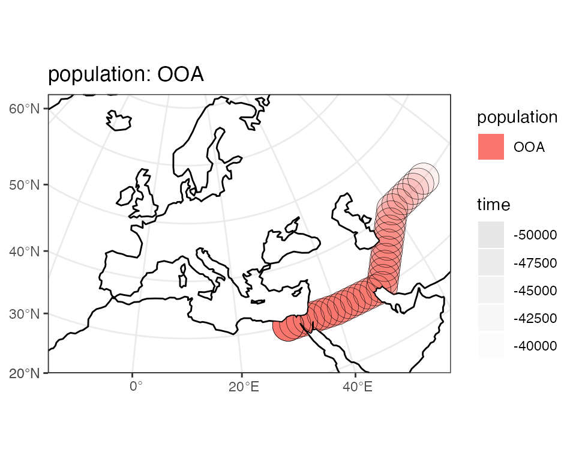
Eastern hunter-gatherers
ehg <- population(
"EHG", time = 28000, Ne = 400, parent = ooa,
world,
coords = list(
c(26, 55), c(38, 53), c(48, 53), c(60, 53),
c(60, 60), c(48, 63), c(38, 63), c(26, 60)
),
remove = 6000
)
ehg
#> spammr 'population' object
#> --------------------------
#> name: EHG
#> split from: OOA
#> split time: 28000
#> removed at: 6000
#> snapshots:
#> # time Ne map
#> 1 28000 400 new
#>
#> projected CRS: ETRS89-extended / LAEA Europe
plot(ehg)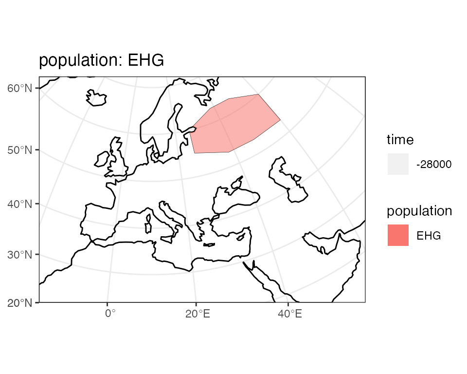
Western hunter-gatherers/farmers/present-day Europeans
Those three populations were obviously very different from one another, but they broadly occupied the same geographic range. We’re clumping them here in a single spatial boundary called “EUR”, but they will obviously change over time through admixture with other populations.
eur <- population(
name = "EUR", time = 25000, Ne = 1000, parent = ehg,
world, region = europe
)
eur
#> spammr 'population' object
#> --------------------------
#> name: EUR
#> split from: EHG
#> split time: 25000
#> removed at: [will not be removed]
#> snapshots:
#> # time Ne map
#> 1 25000 1000 new
#>
#> projected CRS: ETRS89-extended / LAEA Europe
plot(eur)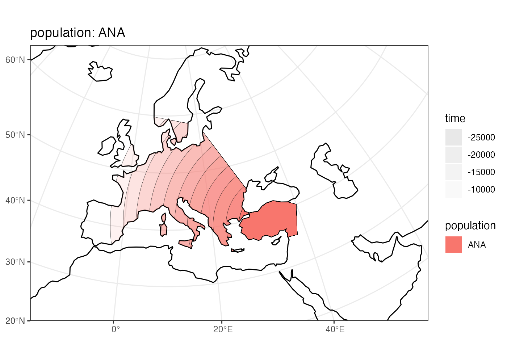
Caucasian hunter-gatherers/Anatolian farmers
Again, we’re oversimplifying here on purpose.
ana <- population(
name = "ANA", time = 28000, Ne = 800, parent = ooa,
world, center = c(34, 38), radius = 700,
region = anatolia, remove = 6000
) %>% expand(
by = 2500,
start = 10000,
end = 7000,
snapshots = 10,
region = europe_anatolia
)
ana
#> spammr 'population' object
#> --------------------------
#> name: ANA
#> split from: OOA
#> split time: 28000
#> removed at: 6000
#> snapshots:
#> # time Ne map
#> 1 28000 800 new
#> 2 10000 800 new
#> 3 9700 800 new
#> 4 9400 800 new
#> 5 9100 800 new
#> 6 8800 800 new
#> 7 8500 800 new
#> 8 8200 800 new
#> 9 7900 800 new
#> 10 7600 800 new
#> 11 7300 800 new
#> 12 7000 800 new
#>
#> projected CRS: ETRS89-extended / LAEA Europe
plot(ana)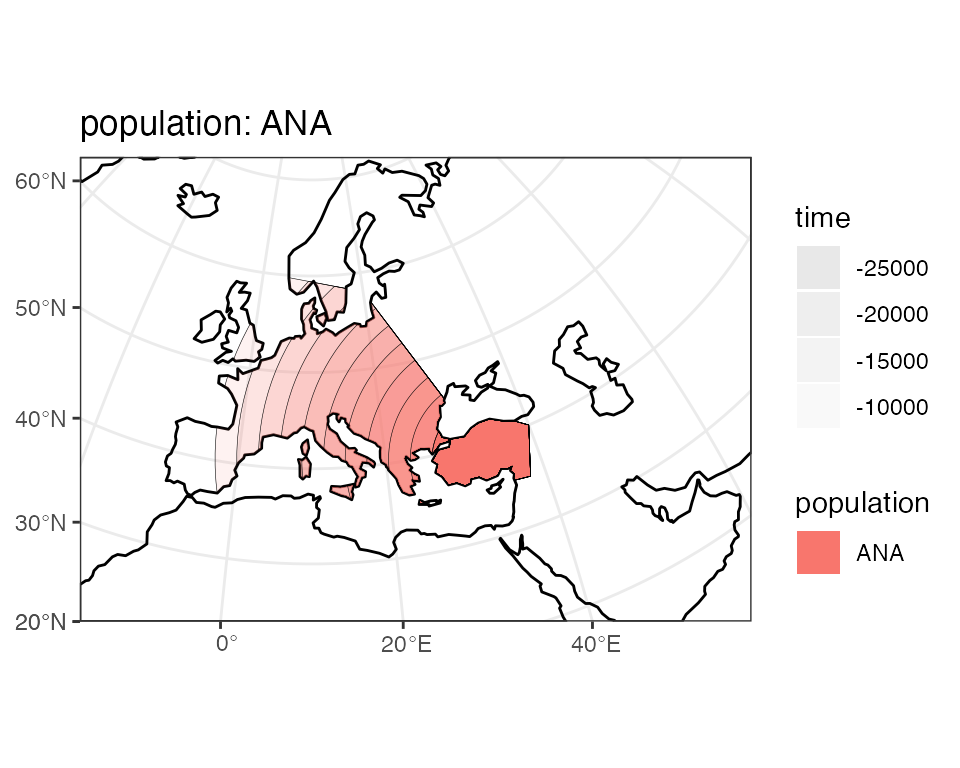
Yamnaya steppe people
yam <- population(
name = "YAM", time = 7000, Ne = 600, parent = ehg,
world, coords = list(
c(26, 50), c(38, 49), c(48, 50),
c(48, 56), c(38, 59), c(26, 56)
),
remove = 2000
)
yam
#> spammr 'population' object
#> --------------------------
#> name: YAM
#> split from: EHG
#> split time: 7000
#> removed at: 2000
#> snapshots:
#> # time Ne map
#> 1 7000 600 new
#>
#> projected CRS: ETRS89-extended / LAEA Europe
plot(yam)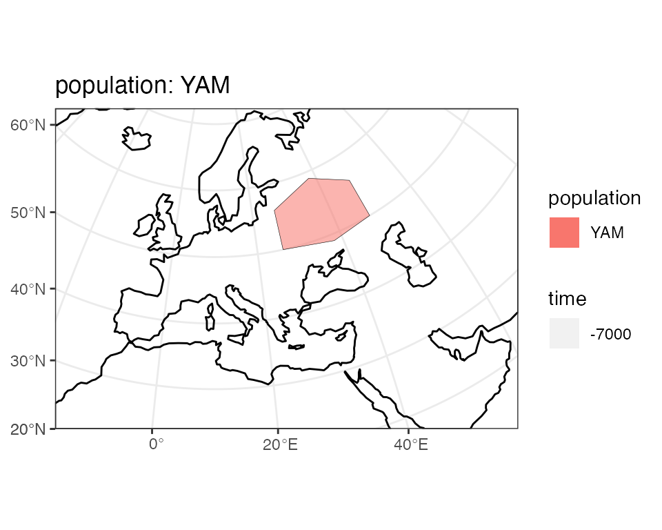
Yamnaya invading Europe
To model the migration of the Yamnaya into Europe, we’re splitting a new “YAM_migr” population from the original Yamnaya. The latter will stay where it is, while the migrating population will start invading the spatial range of Europeans (“Neolithic” population at the time):
yam_migr <- population(
name = "YAM_migr", time = 6000, Ne = 1000, parent = yam,
world, coords = list(
c(26, 50), c(38, 49), c(48, 50),
c(48, 56), c(38, 59), c(26, 56)
),
remove = 2900
) %>%
move(
trajectory = c(15, 50),
start = 5000,
end = 3000,
snapshots = 8
)
yam_migr
#> spammr 'population' object
#> --------------------------
#> name: YAM_migr
#> split from: YAM
#> split time: 6000
#> removed at: 2900
#> snapshots:
#> # time Ne map
#> 1 6000 1000 new
#> 2 5000 1000 new
#> 3 4750 1000 new
#> 4 4500 1000 new
#> 5 4250 1000 new
#> 6 4000 1000 new
#> 7 3750 1000 new
#> 8 3500 1000 new
#> 9 3250 1000 new
#> 10 3000 1000 new
#>
#> projected CRS: ETRS89-extended / LAEA Europe
plot(yam_migr)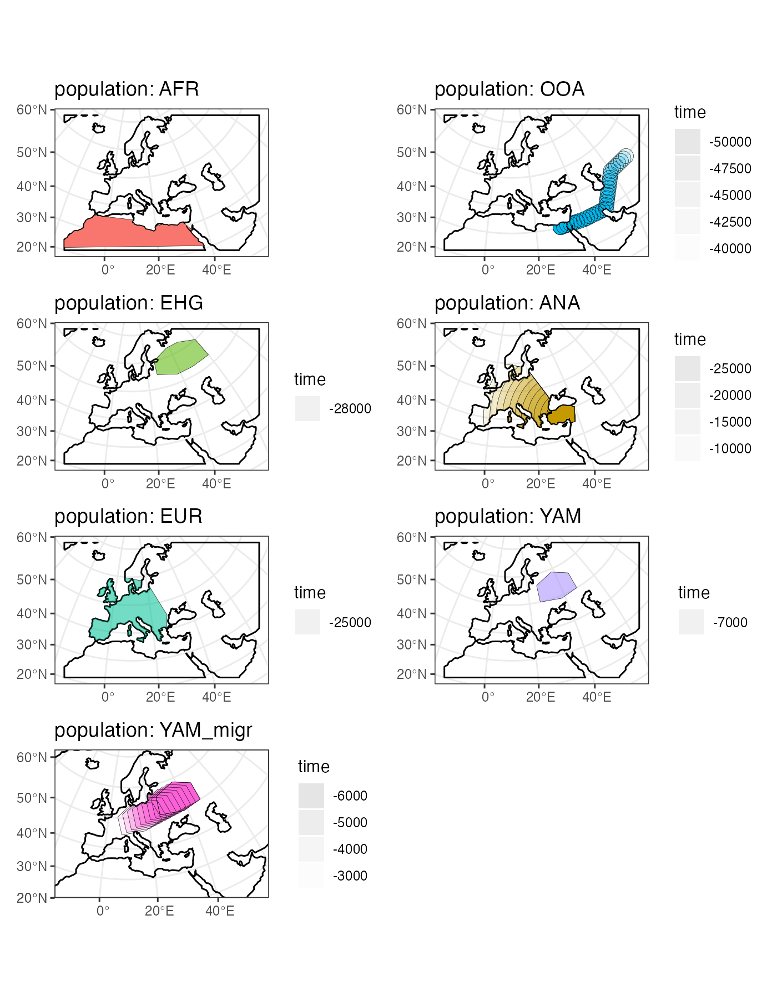
Complete summary of spatial boundaries
The overloaded plot() (in fact, plot.spammr()) function is reasonably smart in terms of plotting different geographic or population ranges at once. We can use this to summarize the entire model at once. Obviously, this is a lot of multi-dimensional information so the plot is definitely not perfect, but it should provide a reasonably compact overview of what we’ve built so far.
plot(afr, ooa, ehg, eur, ana, yam, yam_migr, ncol = 2)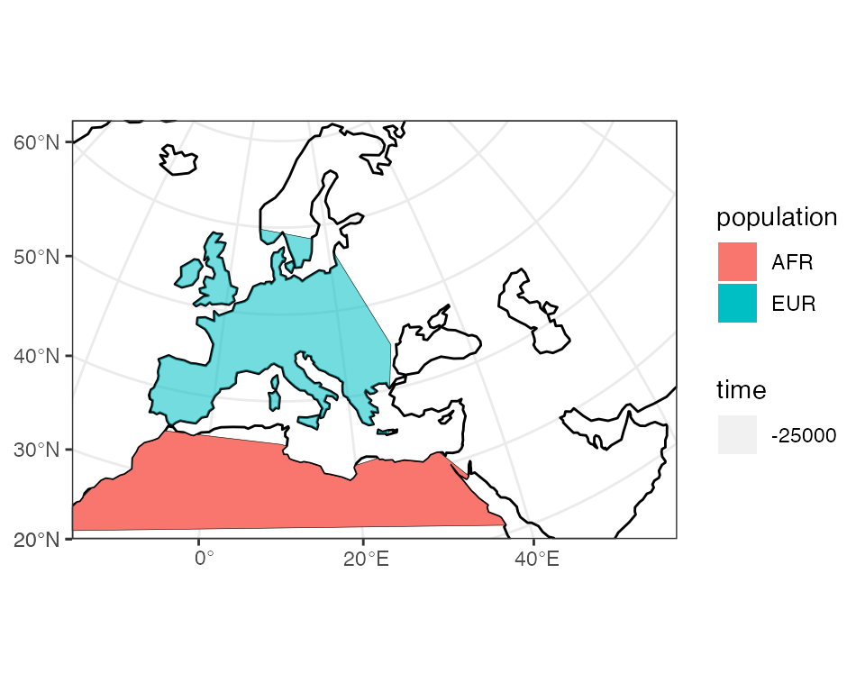
Define admixture events
The way spammr implements admixture events is by calling the admixture() function. This function has a very obvious interface which you will be able to read from the example below without any issues.
One thing to note, however, is the fact that it is crucial that the from and to populations have some sort of overlapping spatial range in order to simulate admixture. This is probably rather obvious, as populations can’t mix in space-time if they don’t overlap at a given point in space-time.
For example, if you look at the spatial boundaries plotted above, you’ll see that the European and African populations don’t have any overlap in population ranges. If we try to instruct spammr to simulate admixture between them, we will get an error:
admixtures <- admixture(from = eur, to = afr, rate = 0.1, start = 20000, end = 15000)Not a sufficient overlap between population ranges of EUR and AFR
at time 20000. The required overlap is 0.20 but the current overlap is
0.000000.
Please check the spatial maps of both populations by running
`plot(eur, afr, pop_facets = F)` and either adjust the admixture
parameters or add `overlap = F` which will instruct spammr to simulate
admixture without spatial overlap.The reason for this is a lack of spatial overlap between the two populations. The error message instructs us to visually verify this, which can be done by spammr’s plot() function and the optional parameter pop_facets = F (which is set to TRUE by default):
plot(eur, afr, pop_facets = F)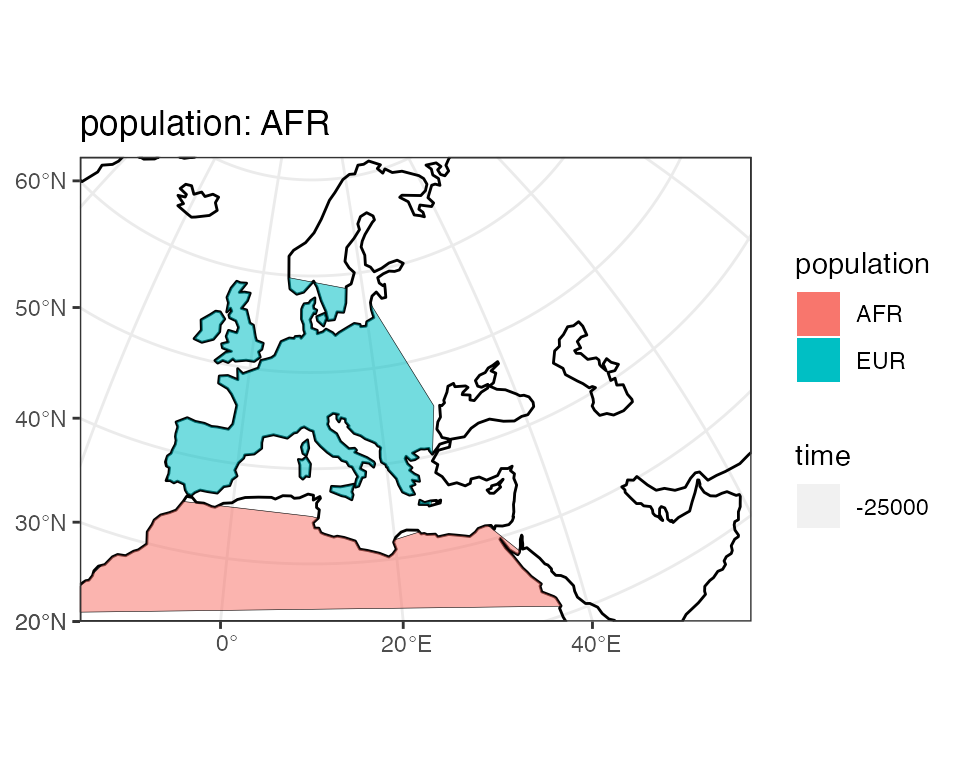
Many models will include multiple admixture events, which we can collect in a simple R list:
admixtures <- list(
admixture(from = ana, to = eur, rate = 0.5, start = 8000, end = 6000),
admixture(from = yam_migr, to = eur, rate = 0.75, start = 4000, end = 3000)
)The admixture() function returns nothing else than a data frame collecting all the admixture parameters for the compile() step below:
admixtures
#> [[1]]
#> from_name to_name tstart tend rate overlap
#> 1 ANA EUR 8000 6000 0.5 1
#>
#> [[2]]
#> from_name to_name tstart tend rate overlap
#> 1 YAM_migr EUR 4000 3000 0.75 1Visualize the entire history of splits and admixtures
With the couple of code snippets above, we have defined a simple history of European populations over the last 50 thousand years. This history includes population splits and admixture events as well as other demographic changes. While spammr tries to make the formal specification of spatio-temporal population dynamics as concise as possible, in the hope to increase reproducibility and minimize errors, because the admixture history can be very complex and occurs both across space and time, it is hard to really visualize everything that will happen on the SLiM side after the simulation starts just from the code alone.
For this purpose, the package includes a function graph() which takes in all the information about the relationships between populations (i.e., the population and admixture objects we defined above) and plots it all in the form of a so-called admixture graph (see here for a discussion of the admixture graph concept).
One important thing to note here is that unlike traditional admixture graphs where each node/population is present only once, in the full spammr graph, a single population can participate in many admixture events over the course of history. This is visualized by assigning a color to each population, and different nodes of the same color representing snapshots in time when a demographic event affecting that population happens.
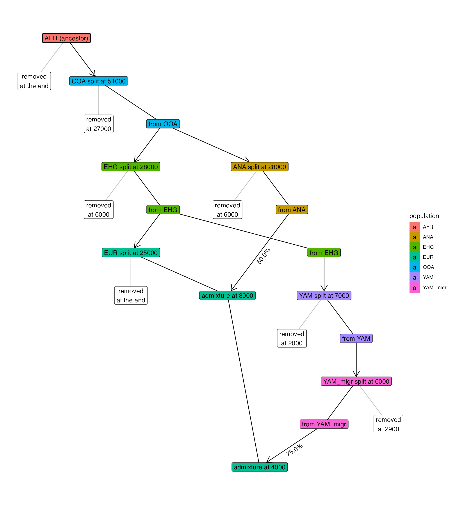
Compile the whole model and load it in SLiM
The most crucial function of spammr is compile(). It takes all population ranges defined across space and time together with list of admixture events (this is optional, of course, as some models won’t include admixture), and then proceeds by converting all vectorized spatial ranges to a raster bitmap form. Furthermore, it compiles all information about split times, \(N_e\) values, admixture directions, times and rates, to a series of tables. All of that will be saved automatically in a dedicated directory in a format that is understood by the backend SLiM script provided by spammr (more on that below).
compile(
populations = list(afr, ooa, ehg, eur, ana, yam, yam_migr),
admixtures = admixtures,
output_dir = "/tmp/test-model",
overwrite = TRUE
)What do the files in the model directory look like? In an ideal case, you as a user should never worry about these things. In fact, the whole purpose of spammr is to let you work on much higher level of abstraction without worrying about these low-level details. That said, you might find it useful to see how things are stored in the background…
First of all, we can inspect the contents of the directory and see that it does, indeed, contain all defined spatial maps (now PNG files, which is what SLiM requires).
list.files("/tmp/test-model", pattern = "*.png")
#> [1] "1.png" "10.png" "11.png" "12.png" "13.png" "14.png" "15.png" "16.png"
#> [9] "17.png" "18.png" "19.png" "2.png" "20.png" "21.png" "22.png" "23.png"
#> [17] "24.png" "25.png" "26.png" "27.png" "28.png" "29.png" "3.png" "30.png"
#> [25] "31.png" "32.png" "33.png" "34.png" "35.png" "36.png" "37.png" "38.png"
#> [33] "39.png" "4.png" "40.png" "41.png" "42.png" "43.png" "44.png" "45.png"
#> [41] "46.png" "47.png" "48.png" "49.png" "5.png" "50.png" "51.png" "52.png"
#> [49] "53.png" "54.png" "55.png" "56.png" "57.png" "58.png" "59.png" "6.png"
#> [57] "60.png" "61.png" "7.png" "8.png" "9.png"It also contains a series of tab-separated configuration tables:
list.files("/tmp/test-model", pattern = "*.tsv")
#> [1] "admixtures.tsv" "maps.tsv"
#> [3] "output_ancestry_AFR.tsv" "output_ancestry_ANA.tsv"
#> [5] "output_ancestry_EHG.tsv" "output_ancestry_EUR.tsv"
#> [7] "output_ancestry_OOA.tsv" "output_ancestry_YAM_migr.tsv"
#> [9] "output_ancestry_YAM.tsv" "output_locations.tsv.gz"
#> [11] "splits.tsv"These tables contain summaries of the model parameters which we defined graphically above, namely:
- the table of population splits:
read.table("/tmp/test-model/splits.tsv", header = T)
#> pop_id Ne parent_id tsplit tremove
#> 1 0 100 -1 -1 -1
#> 2 1 200 0 51000 27000
#> 3 2 400 1 28000 6000
#> 4 3 800 1 28000 6000
#> 5 4 1000 2 25000 -1
#> 6 5 600 2 7000 2000
#> 7 6 1000 5 6000 2900- the table of admixture events:
read.table("/tmp/test-model/admixtures.tsv", header = T)
#> from to tstart tend rate overlap
#> 1 3 4 8000 6000 50 1
#> 2 6 4 4000 3000 75 1- and finally, the table of populations whose spatial maps will be updated throughout the simulation, as well as the times of those updates (this table is rather long, so we’re taking a peek at only the first couple of lines):
head(read.table("/tmp/test-model/maps.tsv", header = T))
#> pop_id time map_number
#> 1 0 -1 1
#> 2 1 51000 2
#> 3 1 50000 3
#> 4 1 49697 4
#> 5 1 49394 5
#> 6 1 49091 6Running the simulation
The way we feed the entire serialized model into SLiM is through the run() function, which understands the format of the model directory created by the compile() function and generates a SLiM script (using a backend skeleton script which is a part of this package and can be found by calling system.file("inst/extdata/backend.slim", package = "spammr"), in case you’d like to peek into its internals).
Note that when you run this model in SLiMgui (which should automatically open by calling the command below), you will see populations pop up in individual panels. This is how SLiMgui tracks spatial ranges of different populations. Everyone is still simulated in the same world, it’s just that the simulation visualizes individual population ranges separately to reduce clutter.
A couple of more things to note: notice that the function accepts several parameters determining the length of the simulated sequence and the recombination rate, as well as the length of the burnin period, the total time of the simulation run (excluding burnin), and generation time (which is used to convert all times defined during model specification above into SLiM’s inetrnal units of generations).
Finally, the parameter track_ancestry determines whether we want our SLiM script to track ancestry proportion changes in all simulations using neutral markers uniformly distributed along each genome. The default value of this parameter is FALSE and no ancestry tracking is performed. Any other non-zero, posititive integer value specifies how many markers we want to use for tracking. Please note that this significantly increases the simulation overhead, not only because the actual burden of mutation objects being simulated, but also because the ancestry is calculated in each generation for each simulated genome. In this case, we’re tracking ancestry using a single non-recombining marker to minimize computational time for the purposes of this demo.
Ancestry tracking is very useful to monitor that the spatial admixture model as defined in R really behaves as expected even on the SLiM side. This can be verified by inspecting files named as output_ancestry_XXX.tsv in the specified output directory. See the manpage of run() for more details.
run(
model_dir = "/tmp/test-model",
gen_time = 30, burnin = 10, sim_length = 70000,
seq_length = 100, recomb_rate = 0,
interaction = 30, spread = 20, track_ancestry = 1
)Post-simulation diagnostics
In case we instructed spammr to track ancestry proportions, we can visualize them after the simulation is over using the built-in diagnostics() function. This is quite barebones for now and the way diagnostics are generated is subject to change…
ancestries("/tmp/test-model")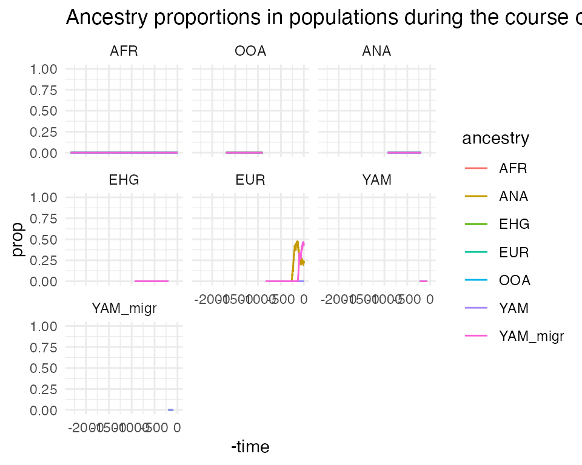
Similarly, we can re-capitulate the spatial dynamics with the spammr function animate():
animate("/tmp/test-model/output_locations.tsv.gz", gen_time = 30, nframes = 200)
In case an argument gif = ... was provided, the function will save the animation as a GIF to the specified location.